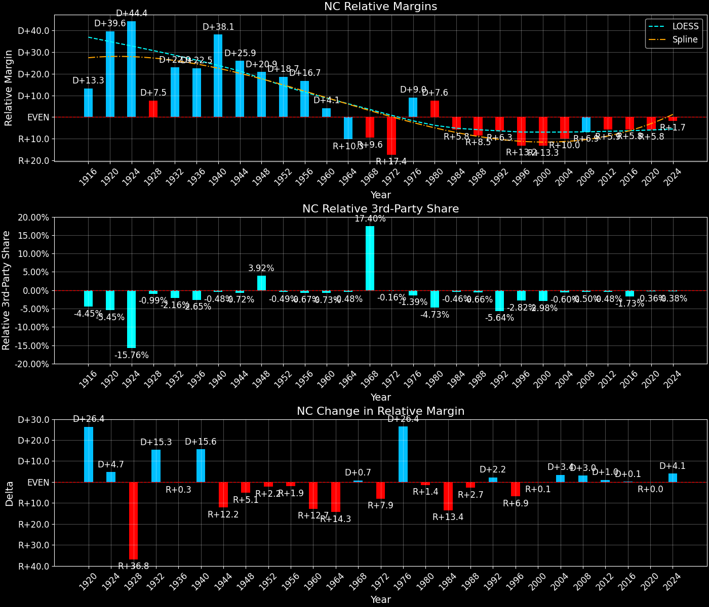

North Carolina (NC) — Statewide

Margins · 3rd-Party share · Pres. deltas

Relative margins · Relative 3rd-Party · Rel. deltas
North Carolina (NC) — Total Data
| Year | EVs | D | R | State Margin | Nat. Margin | Rel. Margin | Total votes |
|---|---|---|---|---|---|---|---|
| 1968 | 13 | 464,113(29.2%) | 627,192(39.5%) | R+10.3 | R+0.6 | R+9.7 | 1,587,493 |
| 1972 | 13 | 418,725(28.4%) | 1,054,889(71.6%) | R+43.2 (Δ R+32.9) | R+23.5 (Δ R+23.0) | R+19.6 (Δ R+9.9) | 1,473,614 |
| 1976 | 13 | 927,365(55.6%) | 741,960(44.4%) | D+11.1 (Δ D+54.3) | D+2.2 (Δ D+25.7) | D+8.9 (Δ D+28.5) | 1,669,325 |
| 1980 | 13 | 875,628(47.5%) | 915,017(49.6%) | R+2.1 (Δ R+13.2) | R+9.9 (Δ R+12.1) | D+7.8 (Δ R+1.1) | 1,843,445 |
| 1984 | 13 | 823,995(38.0%) | 1,345,495(62.0%) | R+24.0 (Δ R+21.9) | R+18.1 (Δ R+8.2) | R+5.9 (Δ R+13.7) | 2,169,490 |
| 1988 | 13 | 890,167(41.8%) | 1,237,258(58.2%) | R+16.3 (Δ D+7.7) | R+7.7 (Δ D+10.4) | R+8.6 (Δ R+2.6) | 2,127,425 |
| 1992 | 14 | 1,114,042(42.7%) | 1,134,661(43.5%) | R+0.8 (Δ D+15.5) | D+5.6 (Δ D+13.3) | R+6.4 (Δ D+2.2) | 2,606,567 |
| 1996 | 14 | 1,107,849(44.3%) | 1,225,938(49.0%) | R+4.7 (Δ R+3.9) | D+8.6 (Δ D+3.0) | R+13.3 (Δ R+6.9) | 2,501,846 |
| 2000 | 14 | 1,257,694(43.2%) | 1,631,165(56.0%) | R+12.8 (Δ R+8.1) | D+0.5 (Δ R+8.0) | R+13.3 (Δ R+0.1) | 2,911,624 |
| 2004 | 15 | 1,525,843(43.6%) | 1,961,162(56.0%) | R+12.4 (Δ D+0.4) | R+2.5 (Δ R+3.0) | R+10.0 (Δ D+3.4) | 3,500,998 |
| 2008 | 15 | 2,142,651(49.7%) | 2,128,474(49.4%) | D+0.3 (Δ D+12.8) | D+7.3 (Δ D+9.7) | R+6.9 (Δ D+3.0) | 4,310,789 |
| 2012 | 15 | 2,178,390(48.5%) | 2,270,396(50.5%) | R+2.0 (Δ R+2.4) | D+3.9 (Δ R+3.4) | R+5.9 (Δ D+1.0) | 4,493,300 |
| 2016 | 15 | 2,189,315(46.8%) | 2,362,628(50.5%) | R+3.7 (Δ R+1.7) | D+2.1 (Δ R+1.8) | R+5.8 (Δ D+0.1) | 4,682,070 |
| 2020 | 15 | 2,683,787(48.7%) | 2,757,113(50.0%) | R+1.3 (Δ D+2.4) | D+4.4 (Δ D+2.3) | R+5.8 (Δ D+0.0) | 5,509,307 |
| 2024 | 16 | 2,715,375(47.6%) | 2,898,423(50.9%) | R+3.2 (Δ R+1.9) | R+1.5 (Δ R+6.0) | R+1.7 (Δ D+4.1) | 5,699,141 |
Column explanations
- Δ
- Change (delta) in the value from the previous election year.
- Year
- Election year.
- EVs
- Number of electoral votes allocated to this state or unit.
- D
- Number of votes for the Democratic candidate (raw count(pct%)).
- R
- Number of votes for the Republican candidate (raw count(pct%)).
- State Margin
- Margin between the two major-party candidates, including third-party votes ((D - R)/total).
- Nat. Margin
- The national presidential margin for that year, including third-party votes ((D_total - R_total)/total_votes).
- Rel. Margin
- The presidential margin relative to the national presidential margin (Margin - Nat. Margin).
- Total votes
- Total voter turnout or ballots cast (when provided).
North Carolina (NC) — Third-Party Data
| Year | Other votes | State 3rd-Party Share | 3rd-Party Nat. Share | 3rd-Party Rel. Share |
|---|---|---|---|---|
| 1968 | 496,188(31.3%) | 31.26% | 13.59% | 17.67% |
| 1972 | 0(0.0%) | 0.00% | 0.09% | -0.09% |
| 1976 | 0(0.0%) | 0.00% | 0.33% | -0.33% |
| 1980 | 52,800(2.9%) | 2.86% | 6.98% | -4.11% |
| 1984 | 0(0.0%) | 0.00% | 0.12% | -0.12% |
| 1988 | 0(0.0%) | 0.00% | 0.21% | -0.21% |
| 1992 | 357,864(13.7%) | 13.73% | 19.23% | -5.50% |
| 1996 | 168,059(6.7%) | 6.72% | 9.68% | -2.96% |
| 2000 | 22,765(0.8%) | 0.78% | 3.65% | -2.87% |
| 2004 | 13,993(0.4%) | 0.40% | 0.84% | -0.44% |
| 2008 | 39,664(0.9%) | 0.92% | 1.38% | -0.46% |
| 2012 | 44,514(1.0%) | 0.99% | 1.62% | -0.63% |
| 2016 | 130,127(2.8%) | 2.78% | 5.54% | -2.76% |
| 2020 | 68,407(1.2%) | 1.24% | 1.84% | -0.60% |
| 2024 | 85,343(1.5%) | 1.50% | 1.88% | -0.38% |
Column explanations
- Year
- Election year.
- Other votes
- Number of votes for third-party (other) candidates (raw count(pct%)).
- State 3rd-Party Share
- Share of the vote received by third-party (other) candidates.
- 3rd-Party Nat. Share
- The national third-party share for that year (3rd-Party votes / total votes).
- 3rd-Party Rel. Share
- Third-party share relative to the national third-party share (3rd-Party share - Nat. 3rd-Party share).

Two-party margins · relative · deltas
North Carolina (NC) — Two-Party Data
| Year | 2-Party Margin | 2-Party Nat. Margin | 2-Party Rel. Margin |
|---|---|---|---|
| 1968 | R+14.9 | R+0.7 | R+14.3 |
| 1972 | R+43.2 (Δ R+28.2) | R+23.6 (Δ R+22.9) | R+19.6 (Δ R+5.3) |
| 1976 | D+11.1 (Δ D+54.3) | D+2.2 (Δ D+25.8) | D+8.9 (Δ D+28.5) |
| 1980 | R+2.2 (Δ R+13.3) | R+10.6 (Δ R+12.8) | D+8.4 (Δ R+0.5) |
| 1984 | R+24.0 (Δ R+21.8) | R+18.1 (Δ R+7.5) | R+5.9 (Δ R+14.3) |
| 1988 | R+16.3 (Δ D+7.7) | R+7.8 (Δ D+10.4) | R+8.6 (Δ R+2.7) |
| 1992 | R+0.9 (Δ D+15.4) | D+6.9 (Δ D+14.7) | R+7.8 (Δ D+0.7) |
| 1996 | R+5.1 (Δ R+4.1) | D+9.5 (Δ D+2.6) | R+14.5 (Δ R+6.7) |
| 2000 | R+12.9 (Δ R+7.9) | D+0.5 (Δ R+8.9) | R+13.5 (Δ D+1.1) |
| 2004 | R+12.5 (Δ D+0.4) | R+2.5 (Δ R+3.0) | R+10.0 (Δ D+3.5) |
| 2008 | D+0.3 (Δ D+12.8) | D+7.4 (Δ D+9.8) | R+7.0 (Δ D+3.0) |
| 2012 | R+2.1 (Δ R+2.4) | D+3.9 (Δ R+3.4) | R+6.0 (Δ D+1.0) |
| 2016 | R+3.8 (Δ R+1.7) | D+2.2 (Δ R+1.7) | R+6.0 (Δ R+0.0) |
| 2020 | R+1.3 (Δ D+2.5) | D+4.5 (Δ D+2.3) | R+5.9 (Δ D+0.2) |
| 2024 | R+3.3 (Δ R+1.9) | R+1.6 (Δ R+6.1) | R+1.7 (Δ D+4.2) |
Column explanations
- Δ
- Change (delta) in the value from the previous election year.
- Year
- Election year.
- 2-Party Margin
- Margin between the two major-party candidates, ignoring third-party votes ((D - R)/(D + R)).
- 2-Party Nat. Margin
- The national presidential margin for that year, including third-party votes ((D_total - R_total)/total_votes).
- 2-Party Rel. Margin
- The presidential margin relative to the national presidential margin (Margin - Nat. Margin).